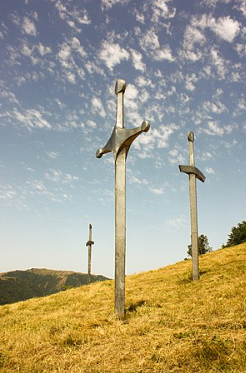
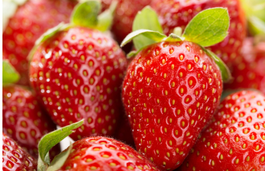

დიდგორის ბრძოლა ან ძლევაჲ საკვირველი (1121 წლის 12 აგვისტო) — ქართველთა ბრძოლა დავით IV აღმაშენებლის მეთაურობით თურქ-სელჩუკთა კოალიციური ლაშქრის წინააღმდეგ დიდგორის ველზე (მანგლისის მახლობლად, თბილისის მისადგომებთან). საქართველოს ისტორიაში დიდგორის ბრძოლა უდიდეს გამარჯვებათა რიცხვს მიეკუთვნება. სხვადასხვა წყაროში დაცულია განსხვავებული ცნობები ლაშქრების სიდიდის შესახებ, თუმცა როგორც ქართულ-სომხურ-ლათინური, ასევე თვით არაბული წყაროების მიხედვით თურქ-სელჩუკთა კოალიციური ლაშქარი ბევრად აღემატებოდა ქართულს. დავით აღმაშენებლის ისტორიკოსმა მტრის ლაშქარი „ქვიშა ზღვისა“-ს შეადარა. დიდგორის ველზე ილღაზის სელჩუკთა კოალიციური ლაშქრის დამარცხების, მისი დევნისა და საბოლოოდ განადგურების შემდეგ, დავით აღმაშენებელს გზა გაეხსნა თბილისისაკენ. მოგვიანებით, 1122 წელს — თბილისის, ხოლო 1123 წელს დმანისის აღება დიდგორის ბრძოლის გაგრძელებას წარმოადგენდა. დიდგორის ბრძოლაში გამარჯვებამ შესაძლებელი გახადა ქვეყნის საბოლოო გათავისუფლება და დასაბამი მისცა ოქროს ხანას საქართველოს ისტორიაში, ამასთანავე, საქართველომ საბოლოოდ დაიმკვიდრა რეგიონის უძლიერესი სახელმწიფოს სახელი.
My favorite fruit is strawberry
მარწყვს ჯერ კიდევ ანტიკური ეპოქის სასიყვარულო ბალადებში ასხამდნენ ხოტბას. მაშინ უკვე იცოდნენ, რომ ეს მარჯნისფერი ნაყოფი მხოლოდ გრძნობებს კი არ აღვიძებდა, არამედ ჯანმრთელობისთვისაც დიდი სარგებლობა მოჰქონდა.